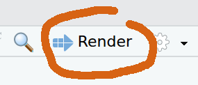
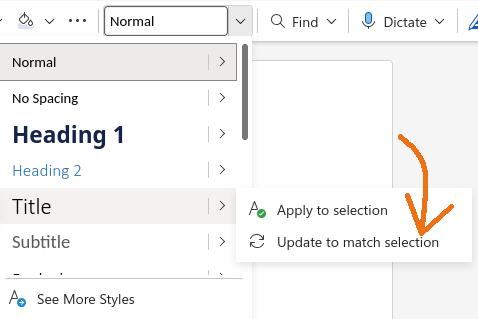
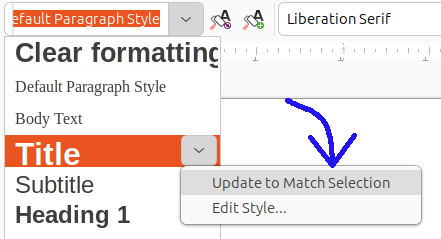

An introduction to using the quarto package in R to produce reproducible, dynamic reports.
Learning objectives
After this lesson, learners should be able to:
Install and use third-party packages for R
Explain the difference between code blocks and markdown text
Apply text formatting for headers and font styles
Include output from R code in a document
Literate programming
What if there was a way to include text and all the code we used for our analyses in a single document? What about a report that includes not only data visualization, but the actual code used to produce those visualizations? With literate programming, we write text and code in a single document - this way, we can update reports and manuscripts with new data or corrections with minimal effort.
Setup
Install libraries
The R program has a bunch of tools that come with the initial installation, but we are going to use some add-ons for this lesson. In R, these “add-ons” are called packages, and we have to install them in order to use them on our machine. For this workshop, we will install two additional packages: knitr and quarto. For both, we will use the install.packages() function in R. In your Console of RStudio (usually the lower-left pane of RStudio), run:
At this point it would be useful to shut down RStudio and start it up again. We do this just so RStudio is aware of those two packages we just installed.
Create a project
Next we need to setup our development environment. Open RStudio and create a new project via:
File > New Project…
Select ‘New Directory’
For the Project Type select ‘Quarto Project’
For Directory name, call it “chapter-1” (without the quotes)
For the subdirectory, select somewhere you will remember (like “My Documents” or “Desktop”)
Markdown syntax and “rendering”
When we create the file, we have an document called chapter-1.qmd open by default. This is what is known as a plain text document, which means it can be opened and edited in any text editor, like NotePad, TextEdit, nano, or for the truly sadistic, vm.
Syntax
There are currently three parts to the file. At the very top is the YAML header:
---
title: "chapter-1"
---
Not a lot of information here, but this is the section you can use for setting document-level formatting and settings. We will not work too much in this space in this lesson.
Second, you see some text:
## Quarto
Quarto enables you to weave together content and executable code into a
finished document. To learn more about Quarto see <https://quarto.org>.
This is what is known as a markdown ‘chunk’, as it is mostly text for human eyes. That is, there is not any real code in this section.
Finally, we see a small bit of R code in a gray rectangle:
```{r}
1+1
```
This is what is known as a code ‘chunk’, as it contains R code we want to run. There are a couple things to note about this chunk. First, it starts and ends with three backticks (” ` “). The backtick key usually lives in the top left part of your keyboard, above the Tab key. All code chunks will start and end with three backticks. Second, we are specifying that the code chunk is written in the R programming language by adding a lower-case”r” inside of curly braces (“{r}”). That may seem redundant, as we are working in RStudio, but the Quarto system is flexible enough to accommodate other programming languages, too, such as Python or Julia.
A reminder that everything we see is plain text. There is no special formatting (even though RStudio is helping with some coloring) in this file.
Rendering
This plain text file can be thought of as a set of instructions. Some of the instructions just indicate text to print (like the part starting “Quarto enables you to…”), and other instructions are to run some code and print the output of that code. We can see this in action by “rendering” the document. This tells the computer to take those instructions and make a document. The three most common output formats of these documents are HTML (like a web page), PDF, and DOC a word processing format for programs like LibreOffice and Microsoft Word. For much of this lesson, we will be creating a HTML file as our output document. To create the document, press the “Render” button near the top of the pane with our .qmd file.

The “Render” button creates the output document
After a moment, a web browser should open, displaying the rendered document. It should look something like:
chapter-1
Quarto
Quarto enables you to weave together content and executable code into a finished document. To learn more about Quarto, see https://quarto.org.
1+1
[1] 2
Looking at this page, we have:
The title of the document, “chapter-1”, which comes from the YAML section;
The heading “Quarto”. This is that little bit of text on the line that started with two pound signs (“##”);
The text describing what Quarto does;
The R code adding 1 + 1 shown in the gray box, and
The output resulting from our R code (the integer 2, in this case).
Changing stuff and seeing what happens
You will note that there is some formatting stuff happening in our final document! The title and the first use of “Quarto” are larger font are probably the most notable. At this point, we are going to edit the document to reflect the structure of our desired output. Remember that we are writing the world’s shortest scientific report, so let us update the title and add section headers.
Go ahead and update the very top of the file so the YAML header has a more descriptive title (“Iris shape analyses”) and on a new line, add your name as author:
---
title: "Iris Shape Analyses"
author: "Jeffrey C. Oliver" <- Use YOUR name here, not mine :)
---
After the last set of three dashes (---), delete the remaining contents and add the four section headers of our paper (Introduction, Methods, Results, and Discussion):
Go ahead and save the file, then press the “Render” button. The output should look like this:
Iris shape analyses
AUTHOR
Jeffrey C. Oliver
Introduction
Methods
Results
Discussion
Formatting fun
To start, we will add a little information in the Introduction and Methods sections. For the introduction, we will add a sentence about what the document is about. Note that because we are using the scientific name for the flowers, we want to italicize the name. We can make text italic by adding underscores (“_“) immediately before and after the text we want italicized (in this case, we add an underscore immediately before and immediately after the word”Iris”).
## Introduction
In this report we test for a relationship between different parts
of morphology in _Iris_ flowers.
Next we can add information about the data we will be using. In this case it is the iris dataset that is built into R. Add this to the Methods section:
## Methods
Analyses are based on built-in data for three _Iris_ species. We
used linear regression to test for relationships.
Let us go ahead and save the file, then press the “Render” button to make sure the text was added as we expect. You should now have a report with more information (albeit minimal) in the Introduction and Methods sections:
Iris shape analyses
AUTHOR
Jeffrey C. Oliver
Introduction
In this report we test for a relationship between different parts of morphology in Iris flowers.
Methods
Analyses are based on built-in data for three Iris species. We used linear regression to test for relationships.
Results
Discussion
Note that in both sections, the word “Iris” should be italicized. We can also see the difference between normal text and those section headers (Introduction, Methods, Results, and Discussion). When we start a line with pound sign(s) (“#”) in a text block, it will format the text as a header. That is, it uses larger, bold font. If you are familiar with web development, the number of pound signs indicates header level: # = H1, ## = H2, ### = H3, and so on. Note this is very different behavior when starting a line in R with a pound sign, where # indicates a comment.
Code chunks
And speaking of R code, we are now going to see the real power of these documents.
Showing our work
For the next step, we will write a code chunk to create a plot of some of the data. Recall that we are interested in the measurements of some flower parts in three species of Iris. For our purposes, we want to include a plot that has measurements of petal length on the x (horizontal) axis and the measurements of petal width on the y (vertical) axis. To write an R code block, we use triple-backticks (```) and braces (“{r}”) to indicate the language (R in our case, but other languages such as python and bash can also be supported). Here we add code to indicate the start of the Results section, as well as a plot of the two variables:
When writing these code blocks, we need to explicitly tell R when to stop interpreting the text as R code. We do this with three more backticks (```) after the last line of code.
Once you have that code block written (don’t forget the closing backticks!), save the file and press the “Render” button.
In some cases, we may want to run some analyses, but keep the code restricted to our source file (the source file is the one we are working in right now). We might do this when the code is not necessary to include in our output, but the results are. In our case, we want to measure the correlation between the two flower measurements, petal length and petal width. We are really interested in showing the r2 value, but we do not need to show the code we used to find it (remember, the code will be in this source file, in case we need to update it). To hide the code of a code chunk, we will pass echo = FALSE in the first line of the code chunk, right after we tell it to use R as the programming language. So, after the code chunk that we used to make the plot, we can add another chunk, this one where we hide the source code from the output:
To run the correlation, we will use the cor() function in R, and assign that value to a variable we will call r. We will then take that value and square it to obtain the r2 value. Update this latest code chunk with:
```{r, echo = FALSE}
# Run correlation
r <- cor(iris$Petal.Length, iris$Petal.Width)
# Calculate r-squared
r_squared <- r * r
```
And rendering the document produces…well, exactly what we had before. That is, we have a plot, but there isn’t anything about the correlation in the output.
But this is OK!
More fun in the text blocks
Inline code
A lot of times, we want to perform some analyses or data wranging (or, more likely, both), and while the underlying code does not need to be included in our report, we do need to show the results. Here is where “inline code” comes in.
We can use a regular text block and make an “inline” call to R, in order to access the value and include it in our report. We use the term “inline” to mean exactly that: in the line of text where we want some result to appear, we add a little bit of R code to retrieve values stored in a variable.
For our purposes, we want to add a little bit of text about the correlation between petal length and petal width and include the r2 we calculated in the preceding code chunk. So, insert an empty line after the code chunk and add:
Petal width and petal length were highly correlated
(r^2^ = `r r_squared`).
So, what is this doing? First, we are adding some old fashioned regular text (Starting with “Petal width and…”). In the parentheses we have “r^2^”. Those carats (“^”) surrounding the 2 indicate we want the number 2 to show up as a superscript. Following the equals sign, we have a single backtick, a lower case “r”, a call to the r2 variable we created in the code chunk above (r_squared), and a closing single backtick. With inline calls to R, we can print out values stored in variables. After adding that line, saving the file, and rendering, you should have one more line at the end of your Results section:
Petal width and petal length were highly correlated (r2 = 0.9271098).
The use of inline code is not limited to only reporting values stored in variables; we can also use R functions. For example. the r2 value shows too many digits (seven digits is excessive!). We can use the round() function in the inline call. In this case we will round the r2 value to two digits. Update the text in the Results section to:
Petal width and petal length were highly correlated
(r^2^ = `r round(r_squared, digits = 2)`).
Make sure you have both the opening and closing parentheses for the round() function, or the document will not render correctly. After updating that line, saving your file, and Rendering, your Results section should look like:
Results
Petal width and petal length were highly correlated (r2 = 0.93).
Link formatting
We can also add a little more information about where these data come from. Since these data were were collected by the botanist Edgar Anderson, let’s provide a link to the Wikipedia page with information about the data set. To find the link you can use your favorite search engine and search for “wikipedia anderson iris data.” Copy the URL of the Wikipedia page to the clipboard and go back to the Materials & Methods section and update it with the link:
Change:
## Methods
Analyses are based on built-in data for three _Iris_ species. We used linear
regression to test for relationships.
To:
## Methods
Analyses are based on data for three _Iris_ species collected by
[Edgar Anderson](https://en.wikipedia.org/wiki/Iris_flower_data_set). We used
linear regression to test for relationships.
The general format for links is a pair of square brackets around the text to appear and a pair of parentheses around the actual url: [LINK TEXT](URL).
Save and render, and you should see:
Methods
Analyses are based on data for three Iris species collected by Edgar Anderson. We used linear regression to test for relationships.
Inserting images
In some cases, you may want to add images to your report. We can do this with syntax that is very similar to the hyperlink syntax we just used. The only real difference is that we add an exclamation point to the very beginning:

The path to image can be the name and location of a file on your computer, or it could be a URL to an online image. For our purposes, we will use a downloaded image of an Iris flower. We are going to use an image of I. virginica by Eric Hunt from Wikimedia commons. You can use the same image (available at https://bit.ly/iris-virginica), or download a different image. Be sure to save the image in the project folder (the folder named “chapter-1”) and remember what you name the image (I am naming my image file “iris-virginica.jpg”). To add this image to the report, add a sentence to the Discussion and use the image syntax described above.
## Discussion
Additional study of _Iris_ flowers is warranted.

In this case, we use the caption (the text inside the square brackets) to credit the photographer (Eric Hunt) and to indicate the species of Iris. Note we can use the same italic text formatting inside the caption (the word “Iris” wrapped in underscores) as we saw before. After saving and rendering, your Discussion section should now look like:
Discussion
Additional study of Iris flowers is warranted.
Image of I. virginica by Eric Hunt
Output formats
Docx
The last thing to consider is the file format you want for your report. We have so far been using the default output format of HTML. The other two common output formats are PDFs and Word Docs. We are going to focus on the Word Doc output format, but you can find information about PDF output in the Additional resources section, below. To switch to Word Doc output, go back to the beginning of your file and add a line indicating our desired format
---
title: "Iris Shape Analyses"
author: "Jeffrey C. Oliver"
format: docx <--- This is our new line
---
Once we have that updated, you can save your file and render the document. You should now have another file in your project called “chapter-1.docx”. You can open this file with a program like Microsoft Word or LibreOffice Writer.
Document templates
One thing you will note in the .docx file you created is that it uses the default styles for Title and Header 2 text. If you want to change these styles, you will need to take three steps (we will go into more detail for step two in a moment):
Create a new .docx file and save it in this project folder under the name chapter-1-template.docx.
Update the relevant styles in chapter-1-template.docx and save it.
Update the YAML header (the bit of text at the top of our .qmd file with title and author information) with instructions on which file to use as the template (note the two-space indentations are required here):
Let’s do this! Start by creating the file as described in step 1, above (i.e. open Microsoft Word or LibreOffice Writer and save the blank document as “chapter-1-template.docx”). Be sure to save it in your project folder (your project folder should be named “chapter-1”). With the file still open, add three lines of text to the file:
Title
Header 2
Text
They should all appear as plain text at this point. First, we will set the Title Style. This is going to determine how the title of our report (“Iris Shape Analyses”) is displayed. Go ahead and make the font size larger (highlight the word “Title” and change the font size to 24pt). Next, update the Header 2 style by highlighting the text “Header 2”, changing the font size to 16pt and making the font bold (usually Ctrl-B will do this). Finally, for the Normal text style, we can just change the font to something other than the default. In my case, I am going to change it to Arial (highlight the text “Normal text” and choose Ariel from the list of fonts).
Now, and this is the real important part, we need to apply those changes to the document’s Styles. We will start again with the Title text. Place your cursor in the middle of the word, click the style dropdown menu, hover over Title, and select “Update to match selection”.

Updating a style in Microsoft Word

Updating a style in LibreOffice Writer
(Note there may be slight differences among operating systems and word processing software).
Now the style you used for your “Title” text will be applied to any documents that use this .docx file as the template file. Go ahead and take the same steps to update the styles for Header 2 and Normal text. Once you finished, save the changes and close this .docx file.
Double check your .qmd file so the header at the top includes a reference to the template document you created.
Save the .qmd file, Render, and then open the chapter-1.docx file. It should have those new styles applied! The last thing to note is that if you want multiple output formats, you can do this by adding more formats to the header. For example, if we want to also create the HTML output we were using before, we can add one more line in the header (again, the two-space indentation is required):
---
title: "Iris Shape Analyses"
author: "Jeffrey C. Oliver"
format:
html: default <---- Add this line to create HTML output, too
docx:
reference-doc: chapter-1-template.docx
---